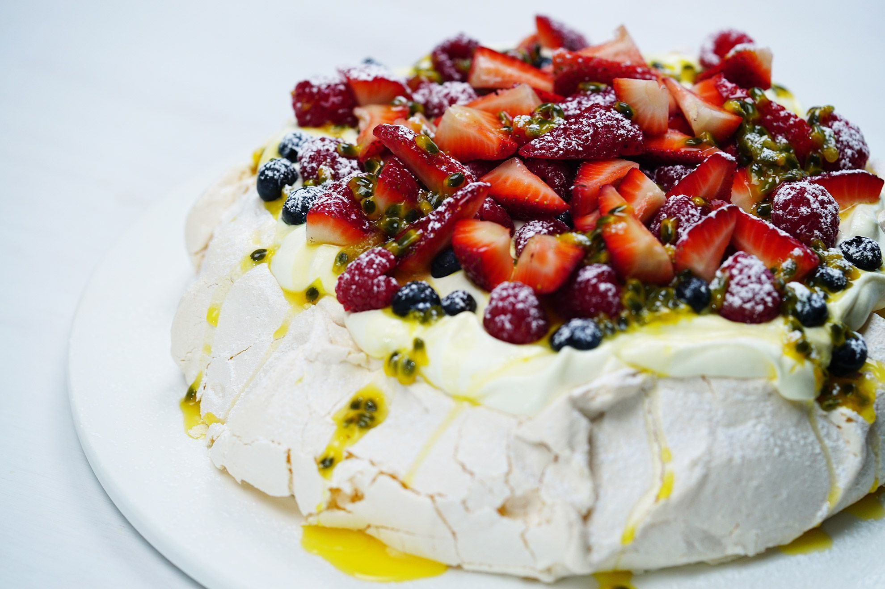

Pavlova

Description
A fluffy dessert made from egg whites and sugar.
Ingredients
- 6 (59g) eggs, separated
- 1 1/4 cups (270g) caster sugar
- 2 tsp Coles Cornflour
- 1 tsp white vinegar
- 1/2 tsp vanilla extract
- 300ml thickened cream
- 2 tbsp pure icing sugar, sifted
- juice of 2 limes
- Finely shredded rind of 2 limes
- 2 Lady finger bananas, thinly sliced diagonally
- 3 golden kiwifruit, peeled, thinly sliced
- 2 starfruit, thinly sliced
- Pulp of 2-3 passionfruit
Steps
- Preheat oven to 120°C. Line an oven tray with foil. Brush with melted butter and dust with cornflour, shaking off excess. Mark a 24cm-diameter circle on foil.
- Use an electric mixer to whisk egg whites in a clean dry bowl until soft peaks form. Gradually add sugar, 1 tablespoon at a time, beating well after each addition, until meringue is thick and glossy and sugar dissolved. Rub a little meringue between fingers. If still "gritty" with sugar, continue to whisk until sugar dissolves. Add cornflour, vinegar and vanilla and whisk until just combined. Spoon meringue onto the foil, using the marked circle as a guide. Smooth sides and top of pavlova. Use a small spatula to forms little peaks around edge of pavlova. Bake in oven for 1 1/2 hours or until pavlova is dry to the touch. Turn off oven. Leave pavlova in oven with the door ajar to cool completely. When completely cold, transfer to serving plate or store in an airtight container until required.
- Use an electric mixer to whisk the cream and icing sugar in a medium bowl until firm peaks form. Spoon cream onto the top of pavlova. Pour lime juice into a ceramic or glass bowl. Add banana slices and toss to coat with juice. Drain. Decorate pavlova with banana, kiwifruit, starfruit, passionfruit and lime rind.
Home